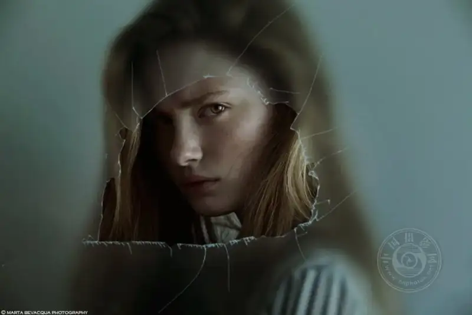
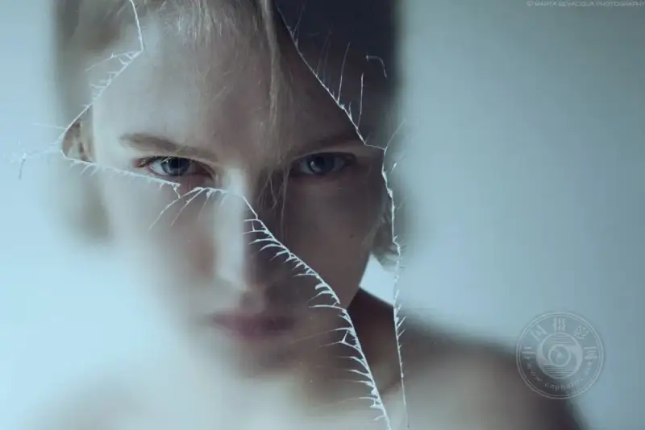
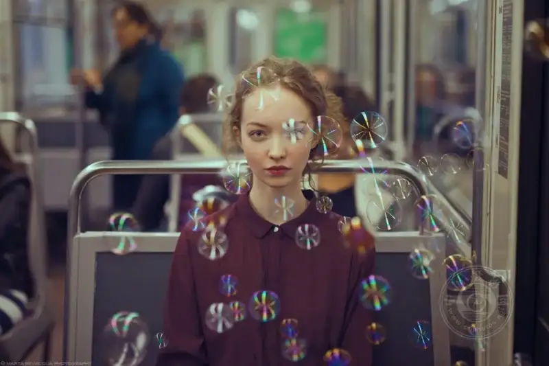
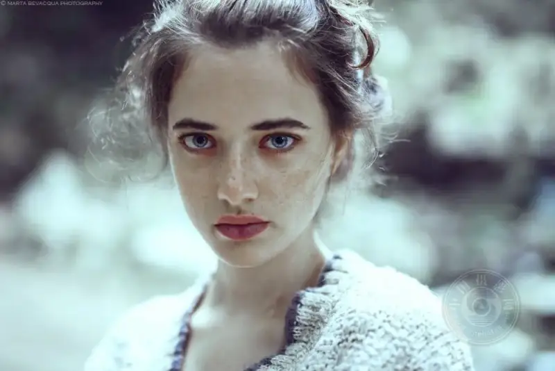
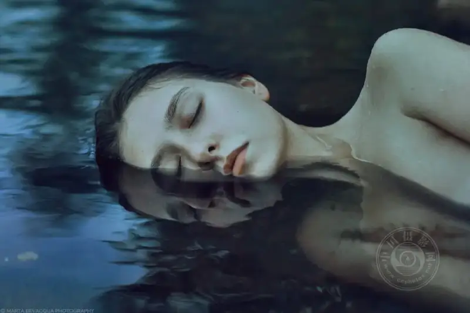
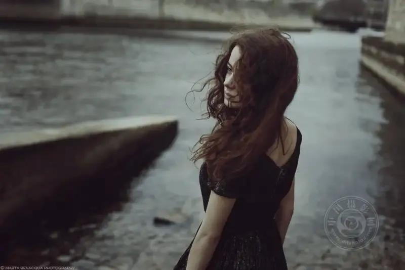
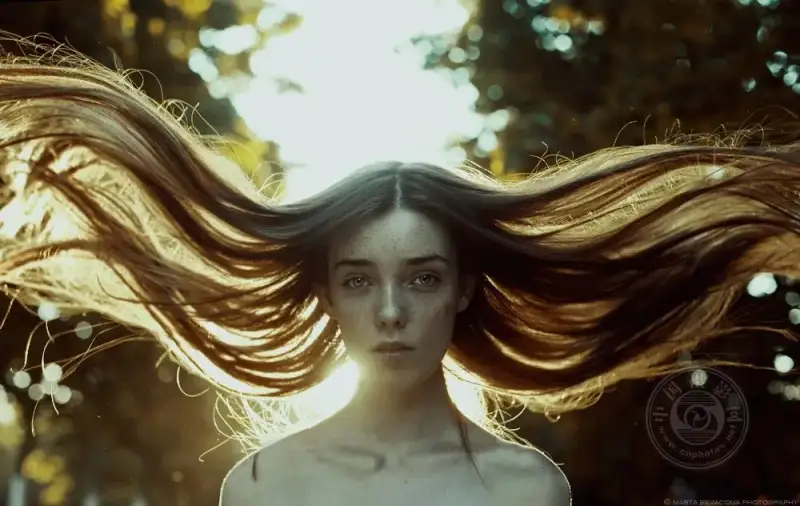

To be honest, in portrait photography you can memorize all the settings and place the lights perfectly. In the end, only one thing moves people: the eyes.
It is not the aperture, not the shutter, and not that lens that cost a fortune. It is the eyes.
Think of it. Da Vinci painted the Mona Lisa. Vermeer painted Girl with a Pearl Earring. McCurry photographed the Afghan Girl. These works still hold people's eyes hundreds of years later. Why? Craft, of course. But what really hooks you is the pair of eyes in the painting or photo, talking back to you.
Anger, disappointment, curiosity, fear, hope, happiness, love, desire, sadness, surprise, and shame. Every human feeling hides behind those two rows of lashes. The eyes are a twin-screen theater. The left eye is one screen, the right eye is the other, and both show what is on your mind.

©Marta Bevacqua
Does it matter where you place the eyes?
Rules are fixed, but people adapt. If you still want my advice, I will say two things. Try to place the eyes at the exact center of the frame, or at the intersection of the rule-of-thirds lines.
Do not underestimate the exact center. When a pair of large eyes stares straight at the middle of the frame, it grabs people. This is especially true when the pupils are wide and the gaze is clear. The viewer cannot look away. They are pulled into the image at once. You and the person in the photo meet eyes across the space, and a relationship starts.

©Marta Bevacqua
Did you know eyes can smile?
People say the face is the mirror of the heart. I think "the eyes are the windows of the heart" is more accurate. The eyes can cry and show anger. They can also smile.
Watch closely. When a person is truly curious, the eyes open wide, and the corners of the mouth may not move at all. When a person is truly happy, the eyes curve into an arc. The lines at the corners of the eyes turn upward. This is the look of laughter in the eyes.
The eyes and a smile are a perfect match, and they add to each other. But sometimes a too-bright smile steals the attention from the eyes. If I had to choose between a good smile and expressive eyes, I might choose the smile, because it moves people so directly. Then again, if a photo has both, it wins for sure.

©Marta Bevacqua
Yes, the "what are you looking at" moment
Eye contact is extremely powerful in photography.
News and documentary work need it. Wedding coverage needs it. Street shots feel different at once with it. Why? When a viewer looks at the photo, they do not feel they are looking at a person. They feel a person is looking at them. That sense of interaction brings the photo to life.
Stare at those eyes long enough, and you may drift. Is it me looking at them, or them looking at me?
If those eyes also hold tears, you are lost. Your heart breaks.

©Marta Bevacqua
Closed eyes can be even more powerful
Sometimes closed eyes carry more power than open ones.
With the eyes closed, the noise fades and it grows quiet. The viewer has to feel, guess, and step in. What are they thinking? Are they asleep, or do they refuse to open their eyes? Are they calm, or sad?
Portrait photography has a subtle line. An invisible film sits between the viewer and the subject. When the eyes are open, the film stays. When the eyes close, the film breaks. You are you, and I become you. Eight out of ten of the most moving emotional portraits have the eyes closed, or half closed.

©Marta Bevacqua
Do not forget to leave room for the gaze
Composition has a term called looking room. It sounds fancy, but it simply means you leave more empty space in the direction the subject is looking.
This empty space is not wasted. It is mental space. If they look left, leave a little more on the left. The viewer naturally follows the gaze and wonders. What are they looking at? Is it hope or loss? Expectation or memory?
This space is for the viewer to fill in the mind. Try it, and you will see.

©Marta Bevacqua
One last "cheat" trick: catchlight
If you shoot portraits, you must learn to find the catchlight. A catchlight is the small bright reflection in a subject's eye.
The catchlight is the small bright spot reflected in the pupil when the subject stands in shadow and looks toward a light source. Outdoors, have the person face the sky or a window. In the studio, just add a light. The principle is the same, but the effect is worlds apart.
That small highlight is like lighting a lamp in the eyes, and the whole face comes alive. When a viewer looks at the image, their eye is drawn to that bright spot by instinct. The photo gains drama at once. It is fair to call it the key to portrait photography.

©Marta Bevacqua
In closing
After all is said and done, remember one rule for portraits. Put the focus on the eyes, and lock it tight.
You can change the settings, crop the frame, and fix the light in post. But if you miss the emotion hidden in those eyes, it is gone forever.
Because:
The soul of a portrait lives in those two small windows.
Next time you pick up the camera, do not rush to press the shutter. First look at those eyes in the viewfinder, and listen to what they say. When you understand, then shoot.